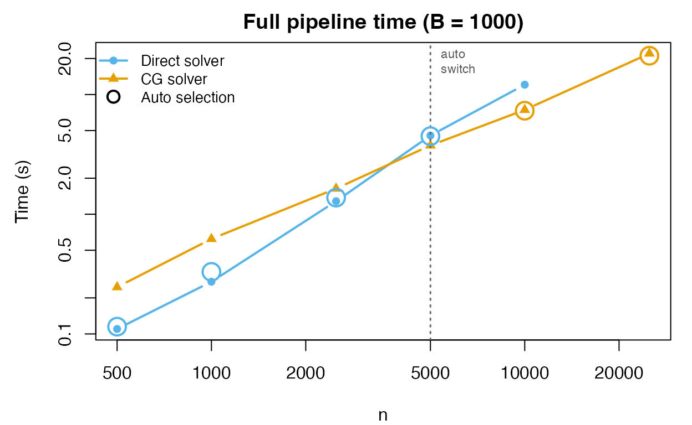
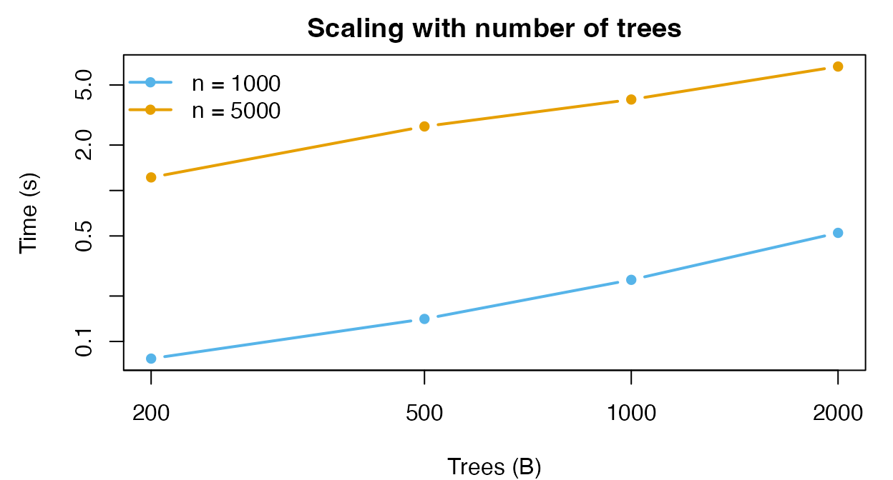
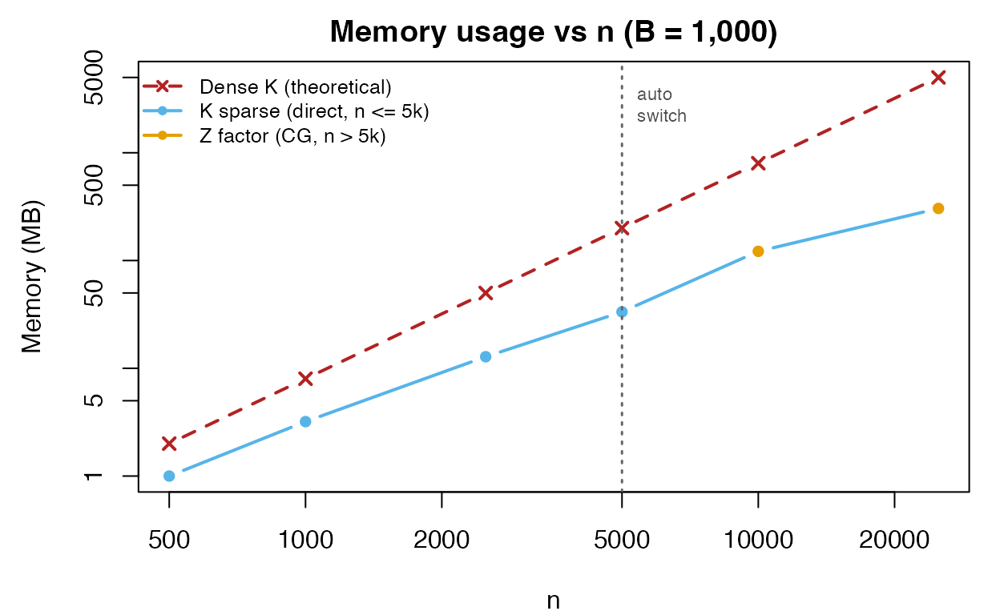

performance.RmdThis vignette benchmarks the forestBalance pipeline to
characterize how speed and memory scale with sample size
()
and number of trees
().
forestBalance adaptively selects between two linear
solvers:
Given a kernel matrix and a binary treatment vector with treated and control units, the kernel energy balancing weights are obtained by solving the linear system where is the modified kernel and is a right-hand side vector determined by a linear constraint.
The modified kernel is defined element-wise as
A critical structural observation is that whenever : the treated–control cross-blocks are identically zero. Therefore is block-diagonal: where is the treated sub-block and is the control sub-block.
The right-hand side vector has a similarly separable structure. Writing (the row sums of ), we have
The full system decomposes into two independent sub-problems:
where and are the constraint-adjusted right-hand sides for each group (each requiring two preliminary solves to determine the Lagrange multiplier).
The proximity kernel is , where is a sparse indicator matrix (, total leaves across all trees). Each row of has exactly nonzero entries (one per tree), so has nonzeros total.
For moderate
,
we form the sub-block kernels explicitly:
where
and
.
Each sub-block is computed via a sparse tcrossprod. The
linear systems are then solved by sparse Cholesky factorization.
Why this is fast:
Cost: for the two sub-block cross-products (where is the average leaf size), plus for sparse Cholesky (in the best case).
For large , even forming and becomes expensive. The conjugate gradient (CG) solver avoids forming any kernel matrix by operating on the factored representation. To solve CG only needs matrix–vector products of the form each costing via two sparse matrix–vector multiplies. The same applies to the control block with .
Why this is fast:
Cost: where . This scales linearly in both and , making it the preferred solver for large problems.
Accuracy: With the default tolerance of , the CG solution agrees with the direct solution to several decimal places in both the ATE estimate and the covariate balance diagnostics (max |SMD|).
We benchmark the full forest_balance() pipeline (forest
fitting, leaf extraction, kernel/Z construction, and weight computation)
across a range of sample sizes with
trees. To show the effect of solver choice, we run each
with both solver = "direct" and solver = "cg"
where feasible:
n_vals <- c(500, 1000, 2500, 5000, 10000, 25000)
B <- 1000
p <- 10
bench <- do.call(rbind, lapply(n_vals, function(nn) {
set.seed(123)
dat <- simulate_data(n = nn, p = p)
# Auto (default)
t_auto <- system.time(
fit_auto <- forest_balance(dat$X, dat$A, dat$Y, num.trees = B)
)["elapsed"]
# Direct (skip for n > 10000 — too slow)
if (nn <= 10000) {
t_dir <- system.time(
fit_dir <- forest_balance(dat$X, dat$A, dat$Y, num.trees = B,
solver = "direct")
)["elapsed"]
} else {
t_dir <- NA
}
# CG (run for all n)
t_cg <- system.time(
fit_cg <- forest_balance(dat$X, dat$A, dat$Y, num.trees = B,
solver = "cg")
)["elapsed"]
data.frame(n = nn, trees = B,
auto = t_auto, direct = t_dir, cg = t_cg,
auto_solver = fit_auto$solver)
}))| n | Trees | Direct (s) | CG (s) | Auto picks |
|---|---|---|---|---|
| 500 | 1000 | 0.11 | 0.25 | direct |
| 1000 | 1000 | 0.27 | 0.62 | direct |
| 2500 | 1000 | 1.29 | 1.64 | direct |
| 5000 | 1000 | 4.54 | 3.76 | direct |
| 10000 | 1000 | 12.08 | 7.45 | cg |
| 25000 | 1000 | – | 22.01 | cg |

The dashed vertical line marks
,
where solver = "auto" switches from direct to CG. The
circled points show the auto-selected solver at each
.
For
the direct solver is faster; for
the CG solver wins and the gap widens with
.
tree_vals <- c(200, 500, 1000, 2000)
n_test <- c(1000, 5000)
tree_bench <- do.call(rbind, lapply(n_test, function(nn) {
do.call(rbind, lapply(tree_vals, function(B) {
set.seed(123)
dat <- simulate_data(n = nn, p = 10)
t <- system.time(
fit <- forest_balance(dat$X, dat$A, dat$Y, num.trees = B)
)["elapsed"]
data.frame(n = nn, trees = B, time = t)
}))
}))| n | Trees | Time (s) |
|---|---|---|
| 1000 | 200 | 0.08 |
| 1000 | 500 | 0.14 |
| 1000 | 1000 | 0.26 |
| 1000 | 2000 | 0.52 |
| 5000 | 200 | 1.22 |
| 5000 | 500 | 2.66 |
| 5000 | 1000 | 4.01 |
| 5000 | 2000 | 6.62 |

The pipeline scales approximately linearly in both and .
When the direct solver is used (), the kernel is formed as a sparse matrix. The kernel becomes sparser as grows, because fewer pairs of observations share a leaf in any given tree.
For , the CG solver avoids forming the kernel entirely; memory usage is then dominated by the sparse indicator matrix ( with nonzeros). The table and plot below show the actual memory usage for both regimes:
mem_data <- do.call(rbind, lapply(c(500, 1000, 2500, 5000, 10000, 25000),
function(nn) {
set.seed(123)
dat <- simulate_data(n = nn, p = 10)
B_val <- 1000
fit_forest <- multi_regression_forest(
dat$X, scale(cbind(dat$A, dat$Y)),
num.trees = B_val, min.node.size = 10
)
leaf_mat <- get_leaf_node_matrix(fit_forest, dat$X)
# Z matrix (always computed)
Z <- leaf_node_kernel_Z(leaf_mat)
z_mb <- as.numeric(object.size(Z)) / 1e6
# Kernel (only for direct regime)
if (nn <= 5000) {
K <- leaf_node_kernel(leaf_mat)
nnz <- length(K@x)
pct_nz <- round(100 * nnz / as.numeric(nn)^2, 1)
k_mb <- round(as.numeric(object.size(K)) / 1e6, 1)
} else {
pct_nz <- NA
k_mb <- NA
}
dense_mb <- round(8 * as.numeric(nn)^2 / 1e6, 0)
data.frame(n = nn, pct_nz = pct_nz,
sparse_MB = k_mb, Z_MB = round(z_mb, 1),
dense_MB = dense_mb,
solver = if (nn <= 5000) "direct" else "cg")
}
))| n | Solver | K % nonzero | Stored | Actual (MB) | Dense K (MB) | Actual / Dense |
|---|---|---|---|---|---|---|
| 500 | direct | 32.5% | K (sparse) | 1.0 | 2 | 50% |
| 1000 | direct | 26.8% | K (sparse) | 3.2 | 8 | 40% |
| 2500 | direct | 17% | K (sparse) | 12.8 | 50 | 25.6% |
| 5000 | direct | 11.1% | K (sparse) | 33.4 | 200 | 16.7% |
| 10000 | cg | – | Z (factor) | 121.7 | 800 | 15.2% |
| 25000 | cg | – | Z (factor) | 304.3 | 5000 | 6.1% |

At , a dense kernel would require 4.7 GB. The CG solver stores only the matrix (~300 MB), a 16-fold reduction.
forest_balance() pipeline scales to
in about 20 seconds with 1,000 trees.